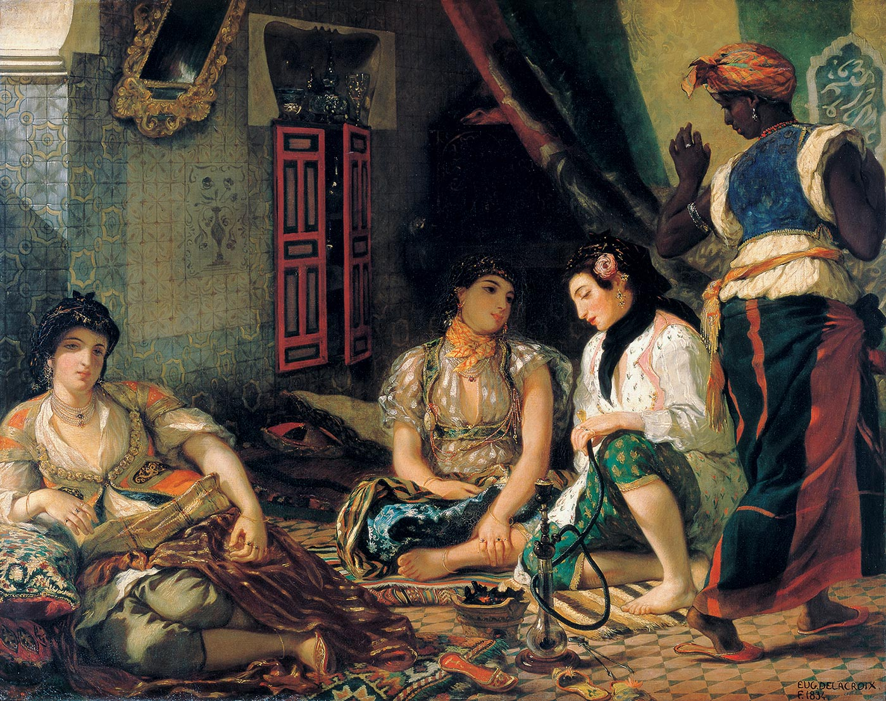

Eugène Delacroix est un peintre français né le 26 avril 1798 à Charenton-Saint-Maurice et mort le 13 août 1863 à Paris. Dans la peinture française du xixe siècle, il est considéré comme le principal représentant du romantisme, dont la vigueur correspond à l'étendue de sa carrière. À quarante ans, sa réputation est suffisamment établie pour lui permettre de recevoir d'importantes commandes de l'État. Il peint sur toile et décore les murs et plafonds de monuments publics. Il laisse en outre des gravures et lithographies, plusieurs articles écrits pour des revues et un Journal publié peu après sa mort et plusieurs fois réédité. Remarqué au Salon en 1824, il produit dans les années suivantes des œuvres s'inspirant d'anecdotes historiques ou littéraires aussi bien que d'événements contemporains (La Liberté guidant le peuple) ou d'un voyage au Maghreb (Femmes d'Alger dans leur appartement).
